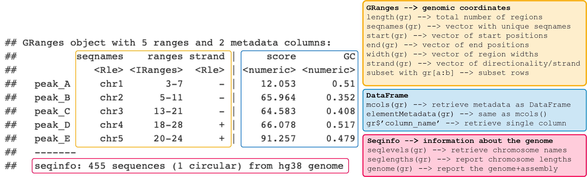

# this is a preperatory chunk add 'exercise.setup = "prep-txdbindiv"` to chunk header to make object available
# This .RData file imports GRanges objects with genomic locations of genes, transcripts, TSSs and promoters.
# Promoters come in two flavors:
# 1. promoters_def = default settings from promoters() function with 2kb up and 0.2 kb downstream the TSS
# 2. promoters_chr19_3k = for heatmaps, with 3kb upstream and 3kb downstream the TSS
load(paste0(datadir, "www/prepared_rds/txdb_annotation_chr19_genes_tx_pr_tss_granges.RData"))2.1 Introduction
In week 1 we discussed the major steps imvolved in obtaining genomics data, from experiment to raw data to normalized signal and peaks. We examined histone PTM ChIP-, DNaseI-, and RNA-seq data of monocytes in the UCSC genome browser and searched for regions with increased signal, peaks. We looked at the position of these peaks in the chromosome and with respect to genes as well as the co-occurence of different marks.
These observations showed you that some marks are associated with particular functional elements (eg active enhancer, active promoter, silenced domains).
This week and next week we will put numbers to these observations and perform computational analyses to answer common questions including: “How many peaks do I have?”, “Is this mark statistically enriched in a particular genomic element?”, “Which and how often do marks co-occur?”,“The expression of which gene could be affected by this mark?”, and “What is the signal of the mark around a particular element of interest like the TSS?”
2.1.1 Learning Objectives
At the end of week 2 you are able to:
- Import ChIP-seq peaks into a GRanges object in r.
- Perform exploratory data analysis on GRanges objects with ChIP-seq peaks.
- Detect and count overlap between two GRanges objects.
- Visualize the number of overlaps in a vennDiagram.
- Visualize the number of overlaps with bar- and pieplots.
- Statistically test for enrichment of histone marks in a particular genomic region.
- Optionally, quantify and plot the overlap among histone marks (a tiny bit like chromHMM but much less fancy, ggplot + geom_bar with index at the bottom for the different combinations or plot the tabular output as heatmap with nubmer display).
- Identify the nearest TSS to a histone ChIP-seq peak.
- Identify the genes that are associated with these TSSs.
These refer to global learning objectives #4-#7.
TEASER… let’s look at some of the plots you will make.
2.2 ChIP-seq peaks in R
2.2.1 Data import
In genomics we often work with interval data. Think of peaks, genes, exons, … any genomic region reported with the genomic coordinates: chr, start, and end. These often come in a tabular format with the basic information about the location and some other information. Common file formats include BED, GFF or BigWig files.
Peak data can be imported into a data.frame in r with:
object_name <- read.table("location/of/peak_file.bed")
The data.frame datastructure is, however, not the most efficient way to work with interval data. E.g. a simple manipulation such as shifting all reported intervals 2 bp to the right, requires you to manipulate the “start” and “end” columns at the same time.
Interval data such as genomic peaks can be more efficiently handled with the IRanges package which works with a data structure especially developed for ranges of integers: IRanges objects.
To construct an IRanges object we require at least two of the following three values:
- a starting coordinate
- a finishing coordinate
- the width of the interval.
The GRanges objects of the GenomicRanges package are very similar but require a additional sequence name (in other words a chromosome) for every interval and an optional strand column.
Here’s an example GRanges object called my_gr with the functions to set and retrieve its content:

Notice that this object holds the genomic coordinates of the peaks and 2 metadata columns. Metadata is data about the data:
| Genomic coordinates | Metadata columns |
|---|---|
| Printed on the left-hand side of the | |
Extract using granges(object_name) |
Extract as DataFrame with mcols(object_name) or object_name$column_name for a specific column |
Columns are restricted to seqnames, ranges and strand |
Almost anything can be stored in the metadata |
Information about the genome is stored in the seqinfo part of the object. In the example you see that the peaks are located in human genome 38 which holds 455 sequences in total of which 1 circular (mitochondrial genome).
GRanges objects follow the tidy data principle: each row of a Ranges object corresponds to an interval, and each column will represent a variable about that interval, and generally each object will represent a single unit of an observation (like gene annotations).
We can use dplyr-like functions to manipulate these objects and use the pipe operator %>% to combine functions in a workflow. A brief reminder of common dplyr-functions and examples of plyranges-relatives on GRanges objects:
| Function | Purpose | Example on GRanges |
|---|---|---|
select() |
subset variables (=columns) | select(my_gr, GC) |
group_by() |
group data into rows with the same value for the specified variable. | my_gr %>% group_by(strand). |
filter() |
subset observations (= rows) | filter(my_gr, GC < 0.4) or my_gr %>% group_by(strand) %>% filter(GC == max(GC)). |
summarize() |
Summarise variables, often per group | group_by(my_gr, strand) %>% summarize(n = n(), gc = max(GC)) |
To parse peak files directly into GRanges we use the import() function from the rtracklayer package:
# import monocyte H3K4me3 peak locations
mono_h3k4me3 <- rtracklayer::import(paste0(datadir, "www/blueprint/bed/C000S5H2.ERX547984.H3K4me3.bwa.GRCh38.20150527.chr19.bed"), format = "narrowPeak") Background: you will come across narrowPeak and broadPeak files. These are both outputs from MACS2 peak calling.
- narrowPeak files are for more focused signals like transcription factor ChIP-seq but also some histone marks.
- broadPeak mode is used for more defuse signals.
The outputs are very similar except that the broadPeak mode, the peak summit won’t be called and the values in the 5th, and 7-9th columns are the mean value across all positions in the peak region.
narrowPeak file broadPeak file H3K27ac H3K27me3 h3k4me3 H3K36me3 H3K9/14ac H3K9me3 H2A.Zac H3K4me1
Let’s take a quick look at one of these files.
Exercise 1:
Print the head 2 lines ofmono_h3k4me3.
mono_h3k4me3 <- rtracklayer::import(paste0(datadir, "www/blueprint/bed/C000S5H2.ERX547984.h3k4me3.bwa.GRCh38.20150527.chr19.bed"), format = "narrowPeak")Hint: You may want to use the head(.., n = ..) function.
head(mono_h3k4me3, n = 2)grade_code()Note 1: We have restricted all peak files to chromosome 19 to limit their file size. That is why “seqinfo” holds only one sequence.
Note 2: The original .BED files lacked column headers. The
rtracklayer::import()function appendended variable names and converted the data to the data type (eg numeric, integer, character etc.) according to the file format we defined.
We have the following information about the identified peaks (ref: MACS2 github):
| Column | Information | narrowPeak description | broadPeak description |
|---|---|---|---|
| 1. | chromosome name | same | same |
| 2. | peak start | same | same |
| 3. | peak end | same | same |
| 4. | peak name | same | same |
| 5. | score | -10log(qvalue) * 10, rounded down to integer value) | mean of -10log(qvalue) * 10 across all positions |
| 6. | strand | +, - or * for unstranded | same |
| 7. | fold_enrichment | at peak summit | mean across all positions |
| 8. | -log10(qvalue) (e.g.if qvalue = 1e-10, this value is 10) | at peak summit | mean across all positions |
| 9. | -log10(pvalue) | at peak summit | mean across all positions |
| 10. | relative summit | position relative to peak start | not reported |
Let’s do some exploratory analyses on these data.
2.2.2 Exploratory data analysis
A common first step in genomics data analysis is to make some exploratory plots. We will do so for mono_h3k4me3.
Exercise 2:
- Determine the number of h3k4me3 peaks in monocytes.
- What is the distribution of peak sizes and scores?
# How many peaks do we have? Hint: You may want to use the length() function.
## [1] 2838# What is the distribution of peak sizes?
summary(...(...))Hint: You may want to retrieve peak widths with width() and subsequently use the base summary function.
## Min. 1st Qu. Median Mean 3rd Qu. Max.
## 200.0 389.2 879.5 1198.6 1661.2 12705.0# What is the distribution of peak scores?Hint: You may want to use score() to retrieve the peak scores.
## Min. 1st Qu. Median Mean 3rd Qu. Max.
## 15 84 374 1212 2415 52282.2.3 Exploratory plotting
Let’s plot some of the above generated outputs using base plotting functions.
Exercise 3:
Plot the h3k4me3 peaksizes as a histogram and as a boxplot.
# plot the distribution of peak sizes for h3k4me3 as histogram
..(..(mono_h3k4me3), main = "Monocytes h3k4me3 ChIP-seq, chr19", xlab = "peak size", col = "gray")Hint: You may want to use width() to retrieve the peak widths and plot with hist()

# plot the same data as boxplot
..(..., main = "Monocytes h3k4me3 ChIP-seq, chr19", ... = "peak size", col = "gray")Hint: You may want to plot with boxplot(). Which axis will hold the widht information, x or y?

Note: plotting with the ggplots packages is also possible, as long as we convert the data we are interested to
data.frameobjects by running for example:
meta_h3k4me3 <- as.data.frame(mcols(mono_h3k4me3))
Several peaks have a width of >10000 bp. You can retrieve these peaks with: mono_h3k4me3[width(mono_h3k4me3)> 10000,] or using filter() from plyranges.
Exercise 4:
What is the number of peaks with width > 10kb.
# How many mono_h3k4me3 peaks have width > 10kb>Hint: You may want to use [ ]-subsetting and width > 10000
Hint: You may want to use length(..[..(..) > 10000,])
## [1] 4Exercise 5:
Filtermono_h3k4me3for peaks with width > 10kb usingfilter()fromplyranges
# filter mono_h3k4me3 for peaks with size above 10kb
.. %>% plyranges::..(.. > ..)## GRanges object with 4 ranges and 6 metadata columns:
## seqnames ranges strand | name
## <Rle> <IRanges> <Rle> | <character>
## [1] chr19 4057708-4069982 * | 3337.macs2_peak_call_peak_22766
## [2] chr19 13094389-13105943 * | 3337.macs2_peak_call_peak_23309
## [3] chr19 35896740-35909444 * | 3337.macs2_peak_call_peak_24016
## [4] chr19 39404035-39414347 * | 3337.macs2_peak_call_peak_24149
## score signalValue pValue qValue peak
## <numeric> <numeric> <numeric> <numeric> <integer>
## [1] 4368 100.87201 441.68515 436.88461 8901
## [2] 3267 79.78811 330.1217 326.78381 8268
## [3] 3088 46.5275 312.01044 308.81287 11185
## [4] 4273 97.90211 431.89682 427.3089 4278
## -------
## seqinfo: 1 sequence from an unspecified genome; no seqlengthsExercise 6
Use theplyranges::filterand the UCSC genome browser to find the gene(s) whose promoter(s) is/are covered by the peak with the highest score.
# find the peak peak with highest scoreHint: You may want to use score == max(score)
## GRanges object with 1 range and 6 metadata columns:
## seqnames ranges strand | name
## <Rle> <IRanges> <Rle> | <character>
## [1] chr19 15377793-15380841 * | 3337.macs2_peak_call_peak_23451
## score signalValue pValue qValue peak
## <numeric> <numeric> <numeric> <numeric> <integer>
## [1] 5228 116.995 530.1864 522.80273 1381
## -------
## seqinfo: 1 sequence from an unspecified genome; no seqlengthsLater on in this tutorial we will learn how to annotate peaks with the gene that they most likely control. First we will calculate the fraction of overlap among two
GRanges objects. 2.4 Overlap analysis
2.4.1 Detect overlap with GenomicRanges
The GenomicRanges package has a family of functions to count and identify overlappig intervals in GRanges objects:
countOverlaps: countOverlaps(query, subject) returns a integer vector with the number of overlaps for each element in the query
subsetByOverlaps: subsetByOverlaps(query, subject) extracts the elements in the query that overlap with at least one element in the subject.
findOverlaps: findOverlaps(query, subject) returns a Hits object containing the index pairings for the overlapping elements.
- The columns of indices can be accessed through
queryHits(overlap_object)andsubjectHits(overlap_object).
- If a peak in one of the inputs overlaps with mutiple peaks in the other, its index will appear multiple times in the output.
2.4.2 Overlap promoters vs h3k4me3 peaks
We have used the package TxDb.Hsapiens.UCSC.hg38.knownGene to retrieve the genomic coordinates of all genes on human chromosome 19. This object, genes, thus contains all the coordinates of the outermost UTR boundaries and the Entrez gene identifier of each gene.
# load the txdb package which holds transcript-based gene models of hg38 genome
library(TxDb.Hsapiens.UCSC.hg38.knownGene)
txdb <- TxDb.Hsapiens.UCSC.hg38.knownGene
# extract gene coordinates
genes <- unique(genes(txdb, filter = list(tx_chrom = "chr19")))We define the promoter region as 1kb upstream and 200bp downstream the TSS as follows:
# identify TSS (in this case 1 per gene even though we know that genes have multiple TSSs)
tss <- GenomicRanges::resize(genes, width = 1, fix = "start")
# consider 1kb upstream and 200bp downstream the TSS as promoter
promoters <- GenomicRanges::resize(tss, width = 1000, fix = "end")
promoters <- GenomicRanges::resize(promoters, width = 1200, fix = "start")
# show promoters object
head(promoters, n = 3)## GRanges object with 3 ranges and 1 metadata column:
## seqnames ranges strand | gene_id
## <Rle> <IRanges> <Rle> | <character>
## 1 chr19 58362551-58363750 - | 1
## 100049587 chr19 51646601-51647800 - | 100049587
## 100073347 chr19 56839867-56841066 + | 100073347
## -------
## seqinfo: 595 sequences (1 circular) from hg38 genome
We want to know how many of the promoters overlap with a h3k4me3 peak and vise versa.
Exercise 8:
UsefindOverlaps()to determine the overlap between (query)mono_h3k4me3and (subject)promoters.
# prepare data for exercise 10
library(TxDb.Hsapiens.UCSC.hg38.knownGene)
txdb <- TxDb.Hsapiens.UCSC.hg38.knownGene
# extract gene coordinates
genes <- unique(genes(txdb, filter = list(tx_chrom = "chr19")))
# identify TSS (in this case 1 per gene even though we know that genes have multiple TSSs)
tss <- resize(genes, width = 1, fix = "start")
# consider 1kb upstream and 200bp downstream the TSS as promoter
promoters <- resize(tss, width = 1000, fix = "end")
promoters <- resize(promoters, width = 1200, fix = "start")
# load the monocyte data
load("www/prepared_rds/blueprint_monocyte_chr19_granges.RData")# Find overlap between mono_h3k4me3 peaks and promoters
overlap <- ..(query = .., subject = ..)
# print the overlap output
show(..)## Hits object with 1256 hits and 0 metadata columns:
## queryHits subjectHits
## <integer> <integer>
## [1] 3 1609
## [2] 5 1058
## [3] 6 407
## [4] 7 630
## [5] 8 630
## ... ... ...
## [1252] 2833 1642
## [1253] 2836 1341
## [1254] 2836 1416
## [1255] 2837 1341
## [1256] 2837 1416
## -------
## queryLength: 2838 / subjectLength: 1729
‘overlap’ gives you the indices of mono_h3k4me3 and promoters that overlap. If a peak or a promoter overlaps several times, each overlap will be reported on a new row.
Exercise 11:
How many of the promoters are part of the overlap? And how many of the h3k4me3 peaks?
- Use
queryHits()andsubjectHits()to extract the indices of overlapping peaks and promoters respectively.
- Use
unique()to minimize this output to unique peaks.
- Use
length()to count the number of unique intervals of the query and the subject.
# What is the number of unique h3k4me3 peaks reported in 'overlap'?
length(unique(..(..))) ## [1] 1008# What is the proportion of h3k4me3 peaks that overlap?
length(unique(..(..)))/length(..)## [1] 0.3551797# What is the proportion of promoters that overlap?
length(unique(..(..)))/length(..)## [1] 0.6495084
Let’s plot this overlap in a venn diagram with the plot.pairwise.venn() function of the VennDiagram package.
- Use the minimum of the two ‘unique counts’ as the number of ‘common peaks’ for our venn diagram.
# Identify the minimum of the two numbers of unique intervals among h3k4me3 peaks and promoters
common_intervals <- min(c(length(unique(queryHits(overlap))), length(unique(subjectHits(overlap)))))
# call a new plotting area
grid.newpage()
# Plot the overlap in a venn diagram
draw.pairwise.venn(
area1=length(mono_h3k4me3),
area2=length(promoters),
cross.area=common_intervals,
category=c("h3k4me3", "Promoters"),
fill=c("red", "gray"),
cat.cex=1.2)
Is there a significant enrichment of h3k4me3 in promoters?
To answer this question, we compare the fraction of promoters with a h3k4me3 peak with the chromosome 19-wide fraction of promoters.
If h3k4me3 is not enriched at promoters, we would expect that the fraction of promoters with a h3k4me3 peak is in the same range as the fraction of promoters on chromosome 19. (This is our null hypothesis of no enrichment).
To calculate the chromosome 19-wide fraction of promoters we identify the total number of bps covered by a promoter. As some promoters may overlap we first reduce promoters to non-overlapping intervals.
# total number of bps covered by promoters
total_bp_prom <- sum(width(GenomicRanges::reduce(promoters)))
# chromosome 19-wide fraction of promoters
(prom_fraction_chr19 <- total_bp_prom/seqlengths(promoters)["chr19"])## chr19
## 0.03404707
Promoters make up 3.4% of this chromosome but nearly 65% of all promoters overlap with h3k4me3 peaks. This looks like a strong enrichment. We can test whether the observed fraction is indeed larger than expected with a binomial test, in r we use the function binom.test(x, n, p) for this:
x= number of successes, number of promters with h3k4me3 peak
n= total number of trails, total number of h3k4me3 peaks
p= expected probability of success, in this case the fraction of promoters in chromosome 19
Background: The binomial test is run when an experiment has two possible outcomes (i.e. success/failure) and you have an idea about what the probability of success is. Success in this case is overlap and our expectation is that 3.4% of the cases show overlap. The test calculates the probability of getting a desired outcome with a specific sample size
n.
Exercise 12
Use a binomial test to test for enrichment of h3k4me3 at promoters.
- Use the function
binom.test(x, n, p, alternative = "greater")to call the test
- We set
alternative = "greater"because we test for enrichment and our alternative hypothesis is that the true probability is larger than the expected probability.
# binomial test for enrichment of h3k4me3 peaks in promoters:
binom.test(length(unique(..(overlap))), length(..), prom_fraction_chr19, alternative = "greater" )##
## Exact binomial test
##
## data: length(unique(subjectHits(overlap))) and length(mono_h3k4me3)
## number of successes = 1123, number of trials = 2838, p-value <
## 2.2e-16
## alternative hypothesis: true probability of success is greater than 0.03404707
## 95 percent confidence interval:
## 0.3805112 1.0000000
## sample estimates:
## probability of success
## 0.3957012
The binomial test shows a p-value < 2.2e-16 and a confidence interval that excludes the expected 0.034. We therefore reject the H0 of no enrichment.
In the genome browser we also observed H3K27ac often at promoters. Is this mark enriched in these regions?
Exercise 13
Use a binomial test to test for enrichment of H3K27ac at promoters.
- First, use findOverlaps to detect the overlap between intervals reported in mono_h3k37 and promoters
- Use the function
binom.test(x, n, p, alternative = "greater")to call the test
- We set
alternative = "greater"because we test for enrichment and our alternative hypothesis is that the true probability is larger than the expected probability.
# prepare data for exercise 13
# identify TSS (in this case 1 per gene even though we know that genes have multiple TSSs)
tss <- resize(genes, width = 1, fix = "start")
# consider 1kb upstream and 200bp downstream the TSS as promoter
promoters <- resize(tss, width = 1000, fix = "end")
promoters <- resize(promoters, width = 1200, fix = "start")
# load the monocyte data
load("www/prepared_rds/blueprint_monocyte_chr19_granges.RData")
# fraction of promoters on chr19
prom_fraction_chr19 <- sum(width(GenomicRanges::reduce(promoters)))/seqlengths(promoters)["chr19"]# find overlap between mono_h3k27ac and promoters
overlap2 <- ...overlap2 <- findOverlaps(query = mono_h3k27ac, subject = promoters)# binomial test for enrichment of H3K27ac peaks in promoters
# `prom_fraction_chr19` holds the fractio of promoters in chromosome 19
..(..(..(..(..))), ..(..), prom_fraction_chr19, alternative = "greater" )# binomial test for enrichment of H3K27ac peaks in promoters:
binom.test(length(unique(subjectHits(overlap2))), length(mono_h3k27ac), prom_fraction_chr19, alternative = "greater" )grade_code()Exercise 14:
Do you conclude that H3K27ac is enriched at promoters?
question("Is H3K27ac enriched at promoters?",
answer("*Yes*", correct = T),
answer("*No*", message = "Incorrect. Look at the p-value of the previous test.")
)2.4.3 Overlap with multiple genomic features
remove?
To understand the function of a ChIPped mark or factor we often want to know to which genomic features it binds.
## Loading required package: ChIPpeakAnno## Warning: package 'ChIPpeakAnno' was built under R version 3.6.1## Loading required package: Biostrings## Warning: package 'Biostrings' was built under R version 3.6.1## Loading required package: XVector## Warning: package 'XVector' was built under R version 3.6.1##
## Attaching package: 'XVector'## The following object is masked from 'package:purrr':
##
## compact##
## Attaching package: 'Biostrings'## The following object is masked from 'package:base':
##
## strsplit## Exercise 13
Plot the percentage of features with the mark as barplot and as piechart
- Access the percent values in
h3k4me3_featuresusing the $ operator.
- For plotting use
pie()andbarplot().
# calculate the overlap with features
h3k4me3_features <- assignChromosomeRegion(mono_h3k4me3, TxDb=txdb, precedence = c("Promoters","immediateDownstream", "fiveUTRs", "threeUTRs", "Exons", "Introns" ), nucleotideLevel=FALSE)
# show the results
h3k4me3_features
# make pie-chart## $percentage
## subjectHits
## Promoters immediateDownstream fiveUTRs
## 15.856237 7.822410 2.290345
## threeUTRs Exons Introns
## 2.396054 9.654686 33.474278
## Intergenic.Region
## 28.505990
##
## $jaccard
## Promoters immediateDownstream fiveUTRs
## 0.08682230 0.05611144 0.05285222
## threeUTRs Exons Introns
## 0.04532164 0.05347753 0.12508779
## Intergenic.Region
## 0.27787406
# make barplot
bp <- ..(..$.., ylab="%")
# add percentages to the bars with text()
text(bp, h3k4me3_features$percentage, signif(h3k4me3_features$percentage, 4), pos=1, main = "Mono h3k4me3 in features")
2.4.5 Overlap with GRangesList
remove?
So far we looked at h3k4me3 marking. How do the other marks overlap with genomic features? Instead of rerunning the above code for each mark individually, we combine the individual peak objects into a list of GRanges objects with the function GRangesList().
We have created a GRangesList mono_list by:
# make a list of your GRanges objects
mono_list <- GRangesList(mono_h3k4me1, mono_h3k4me3, mono_h3k9me3, mono_h3k27ac, mono_h3k27me3, mono_h3k36me3)
# add names to each element in the list
names(mono_list) <- c("h3k4me1", "h3k4me3", "h3k9me3", "h3k27ac", "h3k27me3", "h3k36me3")load(paste0(datadir, "www/prepared_rds/txdb_annotation_chr19_genes_tx_pr_tss_granges.RData"))
# print the length of your list
length(mono_list)## [1] 6
The length function now applies to the list and not to the individual items any more.
We can access elements in the list using [[]] or $-sign.
- Use
[[]]and the index: eg.mono_list[[1]]will extract the first item in the list. - Use
[[]]and the name: egmono_list[["h3k36me3"]]will extract the item with this name.
- Use
$item_nameto extract the item with that name.
To calculate the length of individual items in the list use lapply(), which applies a function to each item in the list.
With the fuction lapply(list_object, function) we can apply or loop a function to each element in the list and returns the results as a list.
Here we apply length() to each item in mono_list
# print the length of each element at once with apply
lapply(mono_list, length) ## $h3k4me1
## [1] 3282
##
## $h3k4me3
## [1] 2838
##
## $h3k9me3
## [1] 1893
##
## $h3k27ac
## [1] 3793
##
## $h3k27me3
## [1] 3059
##
## $h3k36me3
## [1] 2084
unlist() flattens the list to one object. Depending on the elements in the list this will return a vector, matrix or, if all elements have the same data structure and column names, one large version of that particular data structure.
E.g. unlist(mono_list) will give you one large GRanges object that is often not usefull because peaks of all marks are mixed up. unlist(lapply(mono_list, length)), on the other hand, returns a usefull vector of peak numbers per ChIP.
Exercise 14:
Make a barplot of peak numbers per ChIP:**
- Use the
mono_listobject
- Obtain
counts_vectorwithlapply(), andunlist()
- Use the
lengthwithinlapply()
# print the length of each element at once with apply
counts_list <- .. ( .. , .. )
# unlist the resulting output
counts_vector <- ..(..)
# make barplot of the number of peaks, store this in 'bp':
bp <- ..(.., ylab = "Number of peaks", main = "Monocytes ChIP-seq; chr19")
# add actual values as text lables to the plot
text(bp, counts_vector, labels=names(counts_vector), pos=1)
Instead of the length, let’s look at the distribution of these peaks among features, as in section 2.4.3.
Exercise 15
For each item in
mono_listdetermine the overlap with genomic features. Use theassignChromosomeRegion(object,TxDb=txdb, nucleotideLevel=FALSE)to assign peaks to features.
## $h3k4me1
## $h3k4me1$percentage
## subjectHits
## Exons Introns fiveUTRs
## 37.99512 64.04631 15.66118
## threeUTRs Promoters immediateDownstream
## 11.63924 18.46435 14.68617
## Intergenic.Region
## 27.11761
##
## $h3k4me1$jaccard
## Exons Introns fiveUTRs
## 0.08055035 0.16283213 0.07648810
## threeUTRs Promoters immediateDownstream
## 0.07698509 0.11468584 0.09312210
## Intergenic.Region
## 0.33093717
##
##
## $h3k4me3
## $h3k4me3$percentage
## subjectHits
## Exons Introns fiveUTRs
## 31.53629 62.75546 12.43834
## threeUTRs Promoters immediateDownstream
## 7.64623 15.85624 10.07752
## Intergenic.Region
## 28.50599
##
## $h3k4me3$jaccard
## Exons Introns fiveUTRs
## 0.05347753 0.12508779 0.05285222
## threeUTRs Promoters immediateDownstream
## 0.04532164 0.08682230 0.05611144
## Intergenic.Region
## 0.27787406
##
##
## $h3k9me3
## $h3k9me3$percentage
## subjectHits
## Exons Introns fiveUTRs
## 33.59746 54.67512 15.79503
## threeUTRs Promoters immediateDownstream
## 13.89329 16.58743 16.69308
## Intergenic.Region
## 37.82356
##
## $h3k9me3$jaccard
## Exons Introns fiveUTRs
## 0.04180360 0.07841503 0.05498345
## threeUTRs Promoters immediateDownstream
## 0.07170120 0.07358800 0.07933718
## Intergenic.Region
## 0.38971161
##
##
## $h3k27ac
## $h3k27ac$percentage
## subjectHits
## Exons Introns fiveUTRs
## 22.462431 63.828104 7.487477
## threeUTRs Promoters immediateDownstream
## 4.877406 11.468495 7.592934
## Intergenic.Region
## 27.339837
##
## $h3k27ac$jaccard
## Exons Introns fiveUTRs
## 0.04691888 0.15459770 0.03645700
## threeUTRs Promoters immediateDownstream
## 0.03188006 0.06926752 0.04707421
## Intergenic.Region
## 0.25216619
##
##
## $h3k27me3
## $h3k27me3$percentage
## subjectHits
## Exons Introns fiveUTRs
## 28.146453 56.652501 9.774436
## threeUTRs Promoters immediateDownstream
## 8.695652 12.389670 10.526316
## Intergenic.Region
## 35.436417
##
## $h3k27me3$jaccard
## Exons Introns fiveUTRs
## 0.05198961 0.12309113 0.04308357
## threeUTRs Promoters immediateDownstream
## 0.05431897 0.06942663 0.06166220
## Intergenic.Region
## 0.36268575
##
##
## $h3k36me3
## $h3k36me3$percentage
## subjectHits
## Exons Introns fiveUTRs
## 45.72937 69.28983 21.54511
## threeUTRs Promoters immediateDownstream
## 18.61804 20.96929 21.11324
## Intergenic.Region
## 24.42418
##
## $h3k36me3$jaccard
## Exons Introns fiveUTRs
## 0.07177286 0.12766334 0.08331787
## threeUTRs Promoters immediateDownstream
## 0.10703448 0.10323648 0.11210191
## Intergenic.Region
## 0.288880812.5 Annotation of ChIP-seq peaks
2.5.1 Distance to TSS
In this part of the analysis we will assign peaks to their closest TSS, assuming that it likely is involved in regulating the expression regulates that gene.
The GenomicRanges package has the function distanceToNearest(x, subject) to help you identify the distance between intervals in x and the nearest neighbor in subject. In this case, the intervals are the peaks and the subject are the TSSs. The function outputs a Hits objects with distances.
Exercise 15
UsedistanceToNearest()to get the distance between h3k4me3 peaks and the nearest TSS.
# calculate the distances from peaks to tss
h3k4me3_to_tss <- ..(.., ..)
Let’s look at the resulting Hits object.
# show object h3k4me3_to_tss
show(h3k4me3_to_tss)## Hits object with 2838 hits and 1 metadata column:
## queryHits subjectHits | distance
## <integer> <integer> | <integer>
## [1] 1 924 | 36487
## [2] 2 1609 | 23749
## [3] 3 1609 | 0
## [4] 4 1609 | 3603
## [5] 5 1058 | 0
## ... ... ... . ...
## [2834] 2834 25 | 2812
## [2835] 2835 25 | 3247
## [2836] 2836 1341 | 0
## [2837] 2837 1416 | 53
## [2838] 2838 1416 | 1545
## -------
## queryLength: 2838 / subjectLength: 1729# summary of distances
summary(mcols(h3k4me3_to_tss)[,1])## Min. 1st Qu. Median Mean 3rd Qu. Max.
## 0 0 3422 9599 11567 447135# plot the distribution of distances
boxplot(mcols(h3k4me3_to_tss)[,1])
2.5.2 Find associating gene
We can use this Hits object to subset peaks to those that are less than 10 Kb away from the TSS. We can than use the function subjectHits() to get the genes associated to each peak.
Exercise 16
Subset the h3k4me3_to_tss for distances =< 10kb and select the associated genes fromgenesobject.
load("www/prepared_rds/txdb_annotation_chr19_genes_tx_pr_tss_granges.RData")
h3k4me3_to_tss <- distanceToNearest(mono_h3k4me3, tss)# save the distances in a vector
distances <- mcols(h3k4me3_to_tss)[,1]
# subset h3k4me3_to_tss by distance
h3k4me3_to_tss_close <- ..[..,..]# obtain the genes
mono_h3k4me3_genes <- unique(genes[..(..)])
# look at the output
show(mono_h3k4me3_genes)## GRanges object with 1144 ranges and 1 metadata column:
## seqnames ranges strand | gene_id
## <Rle> <IRanges> <Rle> | <character>
## 8612 chr19 281040-291403 - | 8612
## 54531 chr19 301444-344815 - | 54531
## 126567 chr19 405445-409147 - | 126567
## 25759 chr19 416583-460996 - | 25759
## 284451 chr19 463346-474983 - | 284451
## ... ... ... ... . ...
## 27243 chr19 58551566-58555105 - | 27243
## 9040 chr19 58555712-58558954 - | 9040
## 100131691 chr19 58559129-58574797 + | 100131691
## 65996 chr19 58573503-58605223 + | 65996
## 7593 chr19 58561932-58573575 - | 7593
## -------
## seqinfo: 1 sequence from hg38 genome
Besides the distance, we are also (very!) interested in the distribution of the ChIP-seq signal around the TSS. We will look at that next week.
background
2.2.1 Background Bioconductor
Bioconductor is a special repository of packages for the analysis of high throughput genomic data in r. Packages are often heavily dependend on each other and regular releases and a special installer ensure that you install package version that can work together. Usually you would use the biocManager::install() command to install these packages. But in this tutorial, all required packages are already installed.
Bioconductor packages that we will be using include:
| Package | Purpose |
|---|---|
| GenomicRanges | Provides the GRanges data structures to store and handle genomic intervals. |
| plyranges | dplyr-like interface for interacting and manipulating Ranges data structures. |
| GenomicFeatures | Functions to retrieve and manage genomic features from database packages. |
| rtracklayer | Provides functions to import and work with annotation files with various formats (GFF, BED, bedGraph, BED15, WIG, BigWig and 2bit). |
TxDb packages |
Provide an R representation of gene models, each genome has a separate package. |
OrgDb packages |
Contain mappings between a unique gene identifier and other kinds of identifiers for a certain genome (eg from Entrez gene identifier to Gene Symbol) |
Bioconductor packages can use data structures different from vectors,matrices or data.frames. The GRanges data structure provided by the GenomicRanges package is an example and is used by many. We will come to those shortly.
These “Bioconductor-specific-objects”, like GRanges, generally have their own set of functions or methods that you can explore using methods(class = "..."). To find out the class, use class(object_name).
Here’s a list of basic functions to explore objects and/or call the help on packages or functions:
- Use
class()to found out what kind of data structure you are dealing with
- Use
show()orprint()to have r print a summary of your data
- use
methods(class = "...")to get a list of (default) methods or functions you can use to extract and manipulate the data, also called assessor functions or getter and setter functions
- use
help(package = "[packageName]")to display the help page